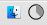
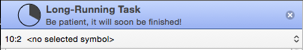

|
Progress Reporting |
|
AppleScript (starting in OS X 10.10 Yosemite) has four properties for reporting progress through a repetitive or long-running task:
progress description,progress additional description- Text describing this task.
progress completed steps- The number of steps of the task that have been completed so far.
progress total steps- The number of steps needed to complete this task. The percentage of the task that has been completed so far is the
progress completed stepsdivided by theprogress total steps. Alternatively, use-1to indicate an ongoing task of indeterminate length (and0to indicate that the task is over).
When progress completed steps and progress total steps are positive, Script Debugger responds in two ways:
- The circular progress indicator changes to the “pie” icon tracking the completed percentage.

- If you have checked View > Show Progress, the progress bar appears at the top of the editor, displaying the “pie” along with the
progress description(and theprogress additional description, if any).

To dismiss the progress bar programmatically, while your script is still running, reset the properties as follows:
set progress total steps to 0
set progress description to ""
set progress additional description to ""